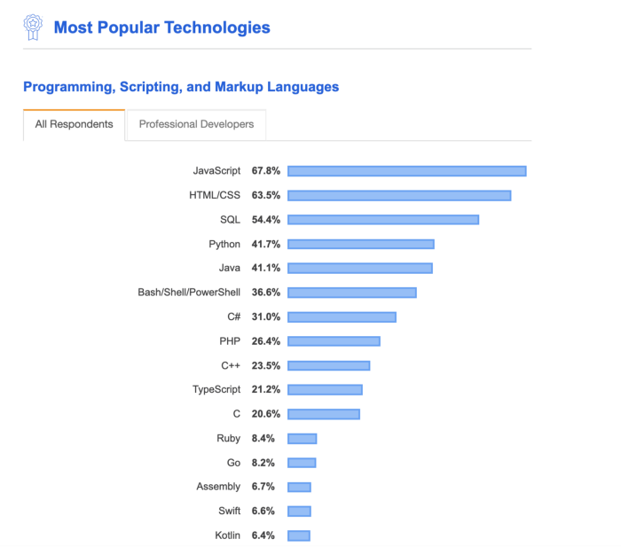

2.Flexible and Dynamic
JavaScript gives us a lot of freedom and choices to make. To really understand how dynamic JavaScript is, let’s compare the widely known “hello world” between Java and JavaScript.


The question you’re probably wondering is, what makes JavaScript so widely adopted and popular? Here are some good reasons I personally believe contributed to the popularity of JavaScript.
We refer the client as the browser and the server as outside the browser context. You’re most likely reading the article on a browser or the native Medium app, which are both clients. The article is fetched from the server and served on the client.
In 2009, Node.js was released. Node.js is an open-source, cross-platform JavaScript run-time environment that executes JavaScript code outside of a browser.
This was an absolute game changer. Before, you were constrained by the browser. With the release of Node, you could write your application in uni language manner, meaning your back and front end in one language.
JavaScript gives us a lot of freedom and choices to make. To really understand how dynamic JavaScript is, let’s compare the widely known “hello world” between Java and JavaScript.
The JavaScript developer community hasn’t always been calm. Since the JavaScript ES2015 release, there are lots of new frameworks, build tools, and new language features to learn. This constant “keeping up” feeling led to the term JavaScript fatigue.
JavaScript Fatigue: There are dozens of JavaScript frameworks, and all of them argue that their philosophy is best. And if you somehow found time to learn them all, after you learned the last one, you would hear that the first one has changed everything and you need to try it again. You would never get any actual work done. You’d spend all of your time just trying out frameworks.